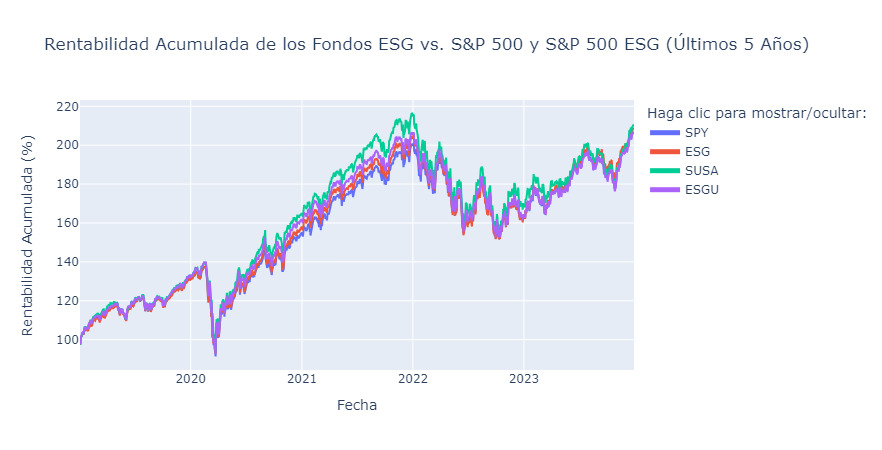

1 — Selección de Tema y Fuente de Información
Tema Elegido: Inversión Sostenible (criterios ESG).
La inversión con criterios ESG es crucial para el desarrollo sostenible, alineándose con los ODS 7 (Energía asequible y no contaminante), ODS 13 (Acción por el clima) y ODS 11 (Ciudades y comunidades sostenibles).
5 puntos clave para grandes rentabilidades en fondos ESG:
1. Demanda liderada por inversores: Más de $500 mil millones invertidos en fondos ESG en 2021 (+55% en activos bajo gestión).
2. Innovación tecnológica: La IA facilita el análisis de grandes volúmenes de datos sobre sostenibilidad.
3. Acción corporativa: Empresas adoptando medidas ESG para crecimiento sostenible a largo plazo.
4. Investigación en resultados sostenibles: Marcos de investigación ESG para apoyar la gestión de inversiones sostenibles.
5. Transición energética: Nuevos riesgos y oportunidades hacia una economía baja en carbono.
↑ Volver al índice2 — Descripción de Datos y Metadatos
Fuente de Datos: Yahoo Finance API (yfinance en Python).
La API yfinance ofrece datos sobre acciones: cotizaciones históricas, dividendos, splits, resúmenes financieros, etc. Los metadatos incluyen ticker, rango de fechas, volumen negociado, precios de apertura/cierre/máximo/mínimo.
Estos metadatos son fundamentales para evaluar la estabilidad y el crecimiento a largo plazo de las inversiones ESG, permitiendo correlacionar con indicadores de sostenibilidad y evaluar su alineación con los ODS.
↑ Volver al índice3 — Funcionamiento de la API yfinance
yfinance es una biblioteca de Python que extrae datos financieros de Yahoo Finance programáticamente mediante solicitudes HTTP. Los datos se recuperan en formato JSON y se convierten a DataFrames de pandas.
Manejo de errores comunes:
Ticker no válido: Validar tickers antes de consultar.
Problemas de Conectividad: Implementar reintentos automáticos.
Límites de tasa (429 Too Many Requests): Implementar retrasos entre solicitudes.
Mejores prácticas: Validación de tickers, manejo de excepciones, uso de caché local, configuración de timeout.
↑ Volver al índice4 — Desarrollo del Programa en Python
Objetivo: Comparar la inversión en el S&P 500 con alternativas ESG sostenibles.
Índices y ETFs seleccionados:
| Ticker | Fondo / Índice |
|---|---|
| ESG | S&P 500 ESG Index |
| ESGU | iShares ESG Aware MSCI USA ETF |
| SUSA | iShares MSCI USA ESG Select ETF |
| SPY | S&P 500 (referencia de mercado) |
Se ha creado una aplicación interactiva Streamlit para comparar la rentabilidad histórica: fondosods.streamlit.app
↑ Volver al índice5 — Resultados de Rentabilidad

| Ticker | Rentabilidad (%) |
|---|---|
| ESG | 108.17% |
| ESGU | 106.16% |
| SPY | 106.16% |
| SUSA | 109.83% |
Análisis y Discusión: Los fondos ESG (ESG, ESGU, SUSA) han tenido un rendimiento ligeramente superior o comparable al S&P 500 (SPY) en los últimos 5 años. SUSA lidera con 109.83%, seguido de ESG con 108.17%. Esto sugiere que las inversiones responsables no solo son competitivas, sino que pueden ofrecer retornos ligeramente superiores.
↑ Volver al índice